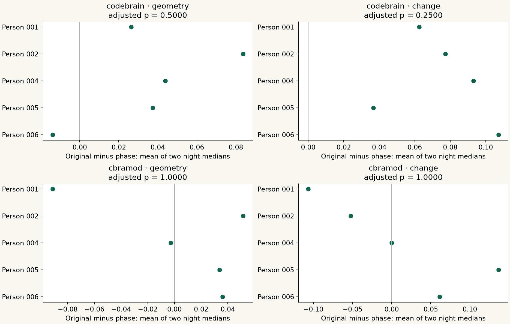

Research Notes · Experiment 012 · September 2026
Measuring where the waveform turns.
Project subtitle
An LLM’s interpretation of your brainwaves
This run measures numerical waveform landmarks. It does not interpret thoughts or run an LLM decoder.
We measured extrema, inflections, cycles and bursts on 122 previously selected ear-EEG segments. Of four prespecified event-to-encoder tests, 4 were estimable and 0 had an adjusted p below 0.05. This measures numerical relationships; it does not establish universal tokens or diagnose brain states.

The question
Do recurring turns in the signal provide a useful numerical description, and do two fixed EEG encoders reflect that description? A reproducible landmark is a starting point. Universality would additionally require stability across new people, sessions, devices and datasets. No semantic or clinical labels enter this experiment.
What a turn means here
An extremum is a peak or trough in a filtered signal; an inflection is a change in curvature. These are separately defined derivative events. We also retain cycle shape, period, amplitude, slope, curvature, rise/decay asymmetry and two burst definitions. These engineered measurements are not automatically transitions between biological states. Waveform path length, turning angle and return distance remain undefined because no direct-waveform geometry was frozen for them.
The complete denominator
The earlier census had 5,760 candidate thirty-second blocks, 2,973 quality passes and 122 time-selected blocks from six people and twelve recordings. Those 122 blocks represent 61 selected minutes within 48 already examined hours. This run adds zero source people or hours and makes zero new encoder forward passes. The native primary branch retains 1,991,157 event candidates: 1,213,086 accepted and 778,071 rejected. These counts include different and overlapping event families; they are not independent tokens or additional recordings.
Direct events and two encoders
The native branch analyzes the original selected 250 Hz microvolt data with 18 frozen variants. A separate branch analyzes five archived 200 Hz variants used by CodeBrain and CBraMod. For that comparison, accepted peaks, troughs and the two inflection directions form a 16-component count vector for each one-second interval across four channels. Geometry compares pairwise cosine-distance ranks; change compares adjacent-interval distance ranks. Each learned encoder vector still has whole-block context. These tests associate event-count patterns with continuous embeddings; they do not localize the models’ causal attention or learn a discrete vocabulary.
Four primary tests
For each model and metric, the block effect is original event-to-embedding correlation minus its independently phase-randomized counterpart. A common complete support is required. Zero norms, insufficient intervals and arithmetically constant distance sequences abstain. Each recording needs at least three paired valid blocks; we take its median effect, average two nights, then weight each complete person equally. The table counts only blocks from complete people. All excluded people, nights and blocks remain in the machine-readable record. The exact two-sided sign-flip test assumes independent people and sign symmetry; four-test Bonferroni adjustment was frozen before output.
| Encoder | Metric | Paired people | Primary blocks | Mean paired difference | Raw p | Adjusted p |
|---|---|---|---|---|---|---|
| codebrain | geometry | 5 | 110 | 0.0355 | 0.1250 | 0.5000 |
| codebrain | change | 5 | 110 | 0.0754 | 0.0625 | 0.2500 |
| cbramod | geometry | 5 | 110 | 0.0054 | 1.0000 | 1.0000 |
| cbramod | change | 5 | 110 | 0.0078 | 0.8750 | 1.0000 |
The resolution of the test
The largest eligible endpoint has 5 complete people. Its smallest attainable two-sided raw p is 2/32 = 0.0625; with four primary tests the smallest adjusted p is 0.25. A smaller eligible sample makes resolution coarser. These p values are not probabilities that a universal language exists. New people supply independent replication; thousands of windows from the same people do not.
Do landmarks survive changes to the input?
Every control is retained: gain, polarity, offset, known time shift, reference, passband, smoothing, line noise, phase, clipping and impulses. Synthetic gap tests are retained separately in the earlier detector validation. The table shows the middle prespecified tolerance, 25 milliseconds; 10 and 50 milliseconds are also reported in the data. Known time shifts and polarity are explicitly aligned. Matching requires full support inside common guarded intervals and one-to-one pairs. Pooled agreement is twice matched events divided by eligible events in both signals. It is a descriptive event-weighted score, not a participant-level test. Empty strata remain undefined, never perfect agreement.
| Input change | Eligible original events | Eligible changed events | Matched | Pooled agreement | Undefined strata / all |
|---|---|---|---|---|---|
| add_50hz | 370906 | 431940 | 363246 | 0.9049 | 0 / 1952 |
| add_60hz | 370906 | 371519 | 367249 | 0.9893 | 0 / 1952 |
| additive_offset_50uv | 370906 | 370906 | 370906 | 1.0000 | 0 / 1952 |
| common_mean_reference | 370906 | 360017 | 320655 | 0.8774 | 0 / 1952 |
| gain_x2 | 370906 | 370906 | 370906 | 1.0000 | 0 / 1952 |
| independent_phase | 370906 | 368638 | 308603 | 0.8346 | 0 / 1952 |
| notch_50hz | 370906 | 370086 | 367630 | 0.9923 | 0 / 1952 |
| notch_60hz | 370906 | 370782 | 370675 | 0.9995 | 0 / 1952 |
| passband_0p5_40 | 0 | 0 | 0 | not estimable | 1952 / 1952 |
| passband_1_30 | 370529 | 298437 | 297676 | 0.8900 | 0 / 1952 |
| polarity_xneg1 | 370906 | 370906 | 370906 | 1.0000 | 0 / 1952 |
| shared_phase | 370906 | 368280 | 308638 | 0.8351 | 0 / 1952 |
| shift_plus_200ms | 361697 | 361503 | 361503 | 0.9997 | 0 / 1952 |
| smoothing_21ms | 370906 | 393273 | 370567 | 0.9698 | 0 / 1952 |
| smoothing_51ms | 370906 | 265272 | 265009 | 0.8331 | 0 / 1952 |
| spike_100uv_8ms | 370906 | 370880 | 369919 | 0.9974 | 0 / 1952 |
| symmetric_clipping_50uv | 370906 | 370918 | 370486 | 0.9989 | 0 / 1952 |
How to read high agreement and missing comparisons
Independently phase-randomized signals still have pooled landmark agreement 0.8346 at 25 milliseconds. Dense landmarks and a nonzero matching tolerance can produce high agreement even after local timing is disrupted; this is not evidence of the same brain state. Gain, offset and aligned polarity controls test expected numerical invariances. The following controls have no estimable pooled agreement after the frozen support rules: passband_0p5_40. Undefined comparisons are retained, not scored as zero or perfect agreement.
Cycles and bursts also occur in noise
The earlier synthetic battery scored 100 independently seeded trials per listed condition, using white or colored noise without a planted oscillator. Cycle events occurred in every scored trial for all listed noise/band combinations. The table reports every condition, including burst detections. A detected oscillation or turning point cannot by itself establish a biological state. These are numerical control detections, not clinical false-positive rates.
| Noise | Method and band (Hz) | Trials with detection / scored | Detected rows |
|---|---|---|---|
| colored_ar1 | bycycle_1.2.0:13-30 | 100 / 100 | 17960 |
| colored_ar1 | bycycle_1.2.0:4-8 | 100 / 100 | 5149 |
| colored_ar1 | bycycle_1.2.0:8-13 | 100 / 100 | 9087 |
| colored_ar1 | bycycle_contiguous:13-30 | 96 / 100 | 256 |
| colored_ar1 | bycycle_contiguous:4-8 | 48 / 100 | 53 |
| colored_ar1 | bycycle_contiguous:8-13 | 90 / 100 | 232 |
| colored_ar1 | neurodsp_dual_threshold:13-30 | 60 / 100 | 78 |
| colored_ar1 | neurodsp_dual_threshold:4-8 | 39 / 100 | 44 |
| colored_ar1 | neurodsp_dual_threshold:8-13 | 75 / 100 | 131 |
| white | bycycle_1.2.0:13-30 | 100 / 100 | 19768 |
| white | bycycle_1.2.0:4-8 | 100 / 100 | 5433 |
| white | bycycle_1.2.0:8-13 | 100 / 100 | 9503 |
| white | bycycle_contiguous:13-30 | 100 / 100 | 1185 |
| white | bycycle_contiguous:4-8 | 3 / 100 | 3 |
| white | bycycle_contiguous:8-13 | 90 / 100 | 190 |
| white | neurodsp_dual_threshold:13-30 | 59 / 100 | 75 |
| white | neurodsp_dual_threshold:4-8 | 34 / 100 | 36 |
| white | neurodsp_dual_threshold:8-13 | 76 / 100 | 134 |
Support, filtering and exposure
Every candidate and rejection remains in a compressed, hash-bound ledger with masks, filter coefficients, transformed input hashes and temporal support. Native event filtering and the inherited 200 Hz encoder preprocessing are distinct. Encoder inputs retain the earlier 0.3–75 Hz passband, 60 Hz notch and µV/100 scaling; the source reports 50 Hz mains. Neither this numerical scale nor successful execution proves scalp-to-ear positional or physiological calibration equivalence. Pretraining overlap remains unknown. The six development people and their selected nights are exposed data; reserved people 007–010 and later sessions remain untouched.
Anonymous measurements still have assumptions
Input arrays contain wave values without identity, history, task or semantic labels. Curator keys join only for provenance and evaluation so repeated nights are not counted as independent people. Filtering, detector definitions, model pretraining and one-second bins still encode assumptions. Agreement among these procedures is evidence to investigate, not proof of an assumption-free or universal representation.
Runtime and a transparent storage expansion
The complete detection and aggregation record reports 1544.96 CPU seconds, 1591.80 cumulative work seconds and 928.7 MiB peak process RSS. Work seconds exclude idle time between checkpoints. The first block projected more than the original 3 GB artifact ceiling. After verifying the checkpoint on a second host, the lead raised only storage to 6 GB, preserving the two-hour CPU and 2 GiB memory limits. Actual analysis artifacts total 3,517,150,610 bytes. Code and methods were frozen before the first empirical event call; no thresholds or tests were tuned on these results. Native provider cost is UNKNOWN. There was no paid API call per window.
Reproduce and continue
The release includes all 2,806 compressed partitions, the queryable SQLite index, exact selected numerical arrays, both archived latent arrays, frozen source, tests and reviews. The offline command verifies every partition and recomputes matching, correlations, participant aggregation and the complete scientific summary. It replays the archived event ledger; detector regeneration is a separate operation. The next dependency is a locked protocol for untouched people and later sessions, followed by its run and a consolidated provenance database. Negative and inconclusive findings remain part of that ledger.
Sources and reproducible data
Frozen protocol · Exact methods · Reproduction instructions · Data release v0.8.0 · EESM23 source
All results, controls and exclusions · Earlier Experiment 011
EEGT source: MIT. Public EEG: CC0. Author source and model notices remain in the release; model checkpoints remain upstream.